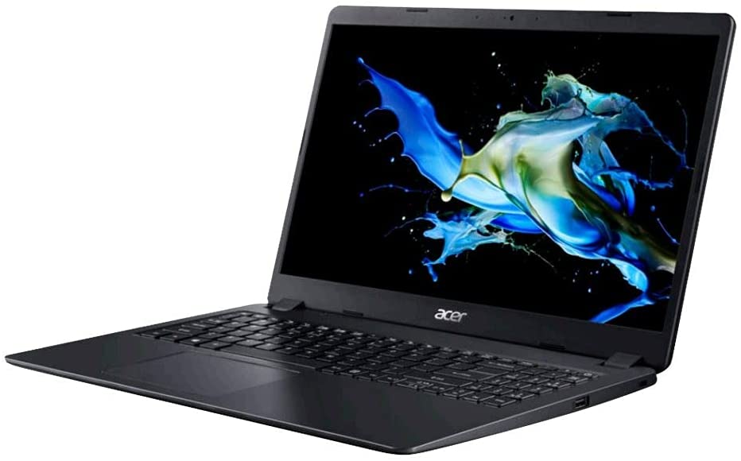

¿Computadoras sin sistema operativo?
En los últimos años, se puso de moda comprar ordenadores sin sistema operativo para poder instalárselo nosotros. Esto se debe, entre otras cuestiones, al avance en conocimientos tecnológicos en la población, la reducción del coste o la versatilidad. Vamos a analizarlo paso a paso.

Ventajas e inconvenientes con respecto a otras opciones
Muy versátil: Al comprarlo sin sistema operativo, tienes la opción de elegir que sistema operativo instalar o incluso, para usuarios más avanzados, puedes modificar tu sistema operativo.
Ahorro asegurado: Cuando compras un ordenador, no solo te cobran el hardware en sí. Ya sabes que te cobran impuestos, ganancias para el vendedor, etc. Pero no probablemente no sabes que también te cobran también el liviano trabajo de instalarle el sistema operativo y, además, no lo cobran especialmente barato. De media, puedes ahorrar hasta 500€ si tú mismo le instalas el OS.
Mayor amplitud de opciones: Si has buscado alguna vez ordenadores de manera eficaz en internet o en tiendas, habrás observado que hay una gran cantidad de ofertas de alto rendimiento, pero que ponen una alerta enorme que dice: "Sin Sistema Operativo!". Si estás abierto también a esta opción, tendrás a tu alcance posibles ordenadores que otras personas no tienen, y por ley de mercado, probablemente ahorrarás dinero.
Necesitará un esfuerzo por tu parte: Este es el único inconveniente que presenta esta opción, y es que es ovbio, que tú deberás instalarle el sistema operativo. No te preocupes! Esto es tarea fácil y no olvidemos los grandes beneficios tan diversos que trae.

Conclusión
Esta será tu mejor opción si no tienes reparos en instalarle tú después el sistema operativo, lo cual es una tarea muy fácil y que aquí te explicamos.
Antes de comprar un ordenador sin sistema operativo
Como hemos visto antes, esta es una opción casi sin fisuras, el problema, es que será necesario que tú instales el sistema operativo. Para ello, te dejamos un tutorial paso a paso de como hacerlo.